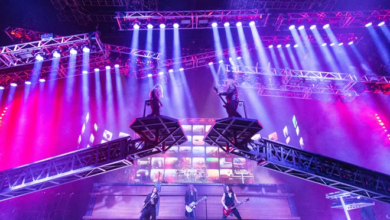
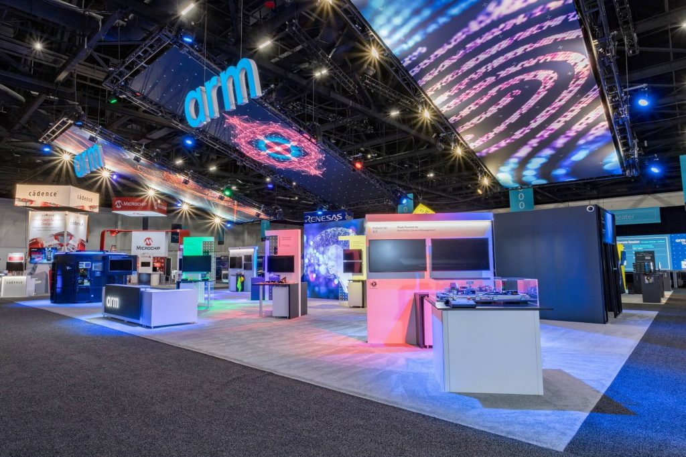

Where Chauvet Lights Shine
Chauvet lighting gear is used across a wide variety of real-world environments everything from small stage shows to massive festivals. Their fixtures offer professional features while staying cost-effective.
Popular Applications
- Concert Tours and Festivals 
- Houses of Worship
- Nightclubs and DJ Events
- Corporate Conferences and Trade Shows 